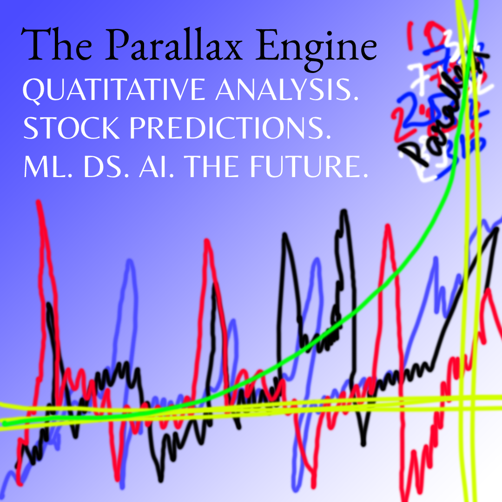

Welcome to the Parallax Engine - Autotrade with AI
Quantitative Analysis|Machine Learning|Data Science|Stock Predictions|The Future
The Must Have Technology For All Active Traders
We provide Charting, Stock Scanning, Real-Time Alerts, Artificial Intelligence, Performance Tracking, Portfolio Management, Simulations, Live Trading, Risk Analysis through Data Science, Market Breadth, and so much more!
The Most Advanced Investing Tools - Helping All Levels Of Investors To Make Better Market Decisions
Our scientists bring rigorous inquiry, data analysis, and invention to help solve the toughest challenges across financial services.
Getting Started
The Parallax Engine offers the training, practise, and support you need to succeed as a self-directed investor if you're just beginning with online trading. |
 |
 |
More Oppurtunities
Even if you have been trading stocks for a long time, a Parallax Premium subscription will help you develop your skills and boost your confidence in your methods. |
Automatic Trading
Investors can use Parallax Engine to enter the world of trading automation if they are confident in their risk tolerance, discipline, and strategy development. Our advanced module, which will soon be available, connects to participating brokers and allows users to autotrade either their own customised trading strategies or those of the AI. |
|

Frequently Asked Questions
(Click on the below arrows to expand the answer)
What is the Stock Market and why should I invest?
A stock market is an open marketplace where you can buy and sell shares of companies that are publicly traded. The stocks signify ownership in the businesses.
Investing in the stock market enables both individuals and businesses to raise capital and build personal wealth. Stock markets are another tool for gauging the health of the economy.
How are prices in the Stock Market predicted?
Discovering the future value of company stock and other financial assets traded on an exchange is made possible with the aid of stock price prediction using machine learning. Gaining sizable profits is the whole point of making stock price predictions. It's challenging to forecast how the stock market will perform. Other variables, including biological and psychological ones, as well as rational and irrational behaviour, are involved in the prediction. These factors work together to create a volatile and dynamic market for shares. Because of this, it is very challenging to make precise stock price predictions.
But, wait! Do you know how does this software work?
Fundamental analysis and technical analysis are the two main divisions of stock market analysis.
Analyzing a company's fundamentals involves evaluating its financial performance and current business environment in order to predict how profitable it will be in the future.
The process of technical analysis, on the other hand, entails reading charts and analysing data to pinpoint market trends.
Are there any limitations on the model?
In general, predicting the price of a stock is much simpler than predicting its price, which is much more challenging. The model requires multiple inputs in order to make predictions. This can involve evaluating the effects of significant political and economic events on the stock price. Additionally, difficult-to-capture factors like the market's psychology, mood, and herd mentality need to be quantified and fed into the model. The model can predict the stock price if the user is able to do so.
The reason for this is that the Machine Learning model can still identify patterns even when the factors involved in accurately predicting the stock value range from physical to psychological, driven by human motives that are frequently irrational. It is important to realise that market volatility results from the fact that stock prices are solely determined by people (after all, it is a market), and people are frequently erratic and irrational. Even so, a machine learning model can identify patterns in their unpredictable behaviour.
Consider a scenario where the pro-free market president of the nation where the stock is traded loses the election. When that happens, stock prices may suddenly fall as investors panic and sell their holdings, but if a different anti-capitalist president loses, the market may react in the opposite way, and stock prices may soar.
Therefore, when developing such a model, such patterns and human behaviour must be quantified and supplied to the model.
Go ahead! Edit the sentence so it's true...
I don't need an easy-to-use, accessible, affordable, risk-eliminating, cutting-edge software.